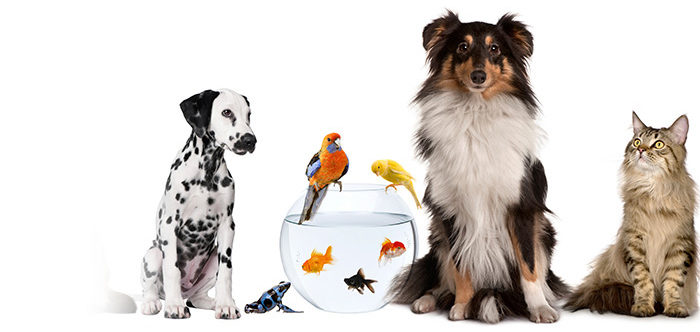
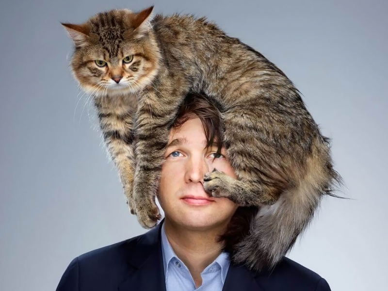

Во-первых, решите, какого именно питомца вы хотите и почему. Зачем вам домашнее животное? Для общения, для обучения ребенка, для помощи в борьбе с психическим заболеванием или для того, чтобы помочь вам самим быть более активными? Это может быть кошка, рыбка, птица, ящерица или кто-то еще. Готовы ли вы посвятить всю жизнь этому питомцу? Содержание домашнего животного — это долгосрочное обязательство, и вы должны убедиться, что вы в состоянии заботиться о нем на протяжении всей его жизни.
Во-вторых, изучите затраты на содержание домашнего животного. Владение питомцем сопряжено с множеством расходов, которые вам нужно будет совершать: от первоначальной платы за приобретение до регулярных визитов к ветеринару, покупки корма и игрушек. В зависимости от типа домашнего животного и его конкретных потребностей, эти расходы могут значительно различаться. К примеру, владельцы собак будут нести более высокие расходы, не считая затрат на корма, так как собаки проводят много времени на открытом воздухе, нуждаются в регулярных прививках и в целом более подвержены риску заболеваний. Хозяева кошек могут практически не нести никаких расходов, кроме покупки корма, наполнителя для туалета, первых прививок и стерилизации. Также необходимо учитывать долгосрочные затраты. В среднем домашняя кошка может прожить от 12 до 15 лет. У собак это зависит от размера и породы, но средний диапазон составляет 8–14 лет.
В-третьих, поймите, сколько времени вам понадобится для ухода за вашим питомцем. Если вы берете молодое и здоровое животное, количество времени, которое ему потребуется от вас, будет варьироваться. Например, котят, щенков и других детенышей нужно кормить чаще, им нужно много внимания и игр. Некоторым взрослым домашним животным также может потребоваться много вашего времени в зависимости от их конкретных потребностей. Пожилые животные часто нуждаются в дополнительной заботе и внимании. Вы также должны учитывать, сколько времени вам нужно будет потратить на уборку. Кошкам требуется регулярная чистка лотка. С собаками придется регулярно гулять, а вдобавок они нередко портят и пачкают интерьер и предметы в доме.
В-четвертых, прежде чем взять нового питомца, вы должны тщательно продумать необходимое ему пространство. Собакам нужно много места, чтобы бегать, играть и общаться с вами в безопасной среде. Дом с двором идеален. Кошек, с другой стороны, можно полностью держать в помещении, и им обычно не нужно много простора для нормального развития. В доме у них меньше шансов получить травму. Птицы и другие мелкие животные также должны жить в среде соответствующего размера. Для небольшой квартиры подойдут рыбки и рептилии.